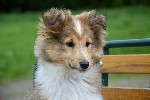

The Border Colley is the rated the smartest dog on the planet according to href="http://pets.webmd.com/dogs/features/how-smart-is-your-dog#1" target="_blank">10 Smartest Dog Breeds

The poodle is the second smartest dog.
The Golder Retreaver is the third smartest dog.
The Sheep Dog is the forth smartest dog.

The Doberman Pinscher is the fith smartest dog.